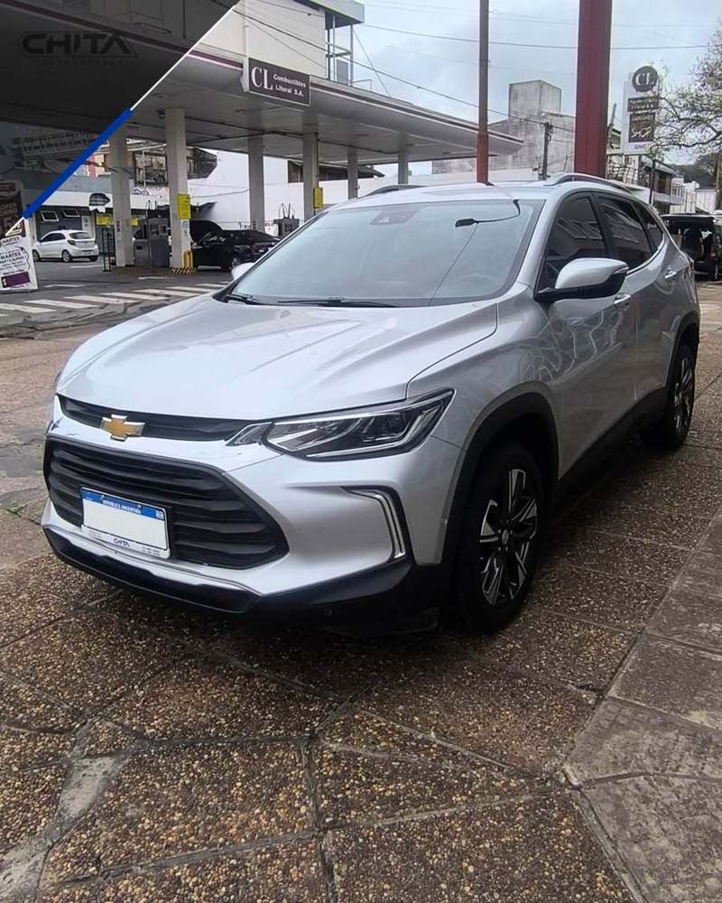

CHITA AUTOMOTORES · GRAL. GALARZA 1712
EL SONIDO
DE LA MÁQUINA
Una experiencia visual y silenciosa construida con las fotos reales del Chevrolet Tracker Premier 1.2T.
RECORRIDO EDITORIAL / NO SON MEDICIONES
SILENCIO

La foto exterior permanece quieta. El recorrido todavía no mide nada.
01/ 06
00:00FASE EDITORIAL00:38 · SIN AUDIO
SCROLL / DRAG / FLECHAS PARA EXPLORAR ↗
02 / ABRÍ EL AUTODESPIECE EDITORIAL
UNA SOLA UNIDAD · FOTOS REALES
ABRÍ
EL AUTO
Seis zonas. Ninguna pieza inventada. Cambiá de capa para leer lo visible en el material de Chita.
01
CARROCERÍA
1.2TConsultá la ficha técnica completa en el local.
La unidad completa, tal como aparece en la foto exterior.
foto 12 · vista delantera derecha.03 / VISORCAMBIO DE FOTO REAL
INSTRUMENTO DE INSPECCIÓN
¿QUÉ HAY
DETRÁS?
La lente no atraviesa la chapa: cambia entre fotografías reales del mismo vehículo.
EXTERIOR
EXTERIOR
Frente y lateral del vehículo · foto 12.
ALTERNATIVA LINEALRUTA C
LAS FASES
REALES
Ver ficha del vehículo ↗07 / CIERREFICHA DEL VEHÍCULO
EL AUTO QUEDA QUIETO
CHEVROLET
TRACKER
- VERSIÓN
- Premier 1.2T
- AÑO
- 2021
- KILÓMETROS
- 100.000
No hay audio, video ni telemetría del vehículo en el material recibido. Esta pieza es visual y silenciosa; no presenta RPM, velocidad, cambios ni aceleración como datos medidos.